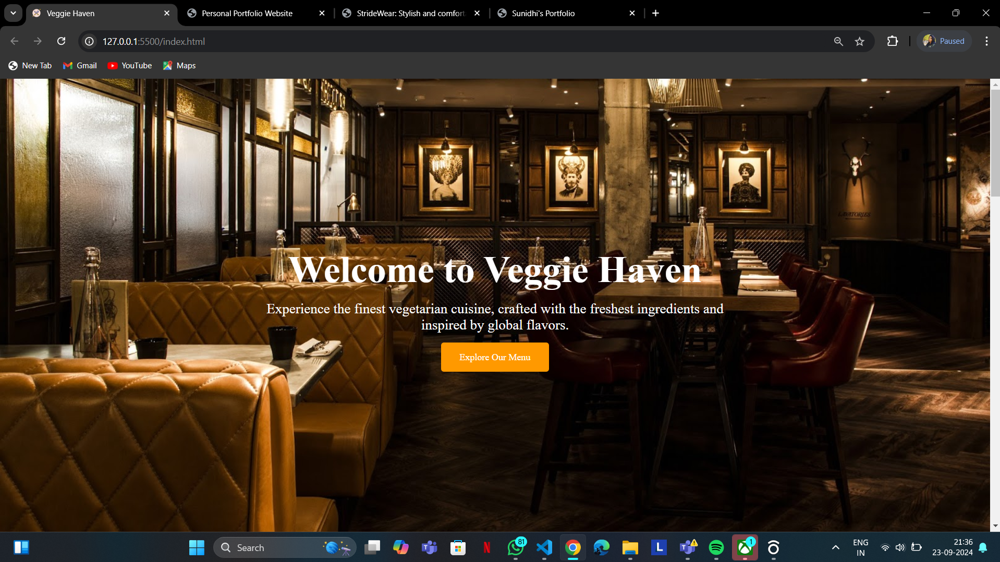
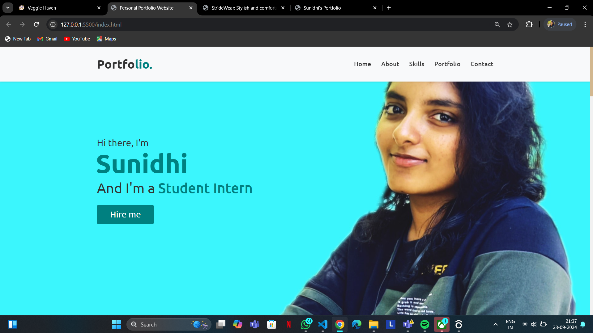
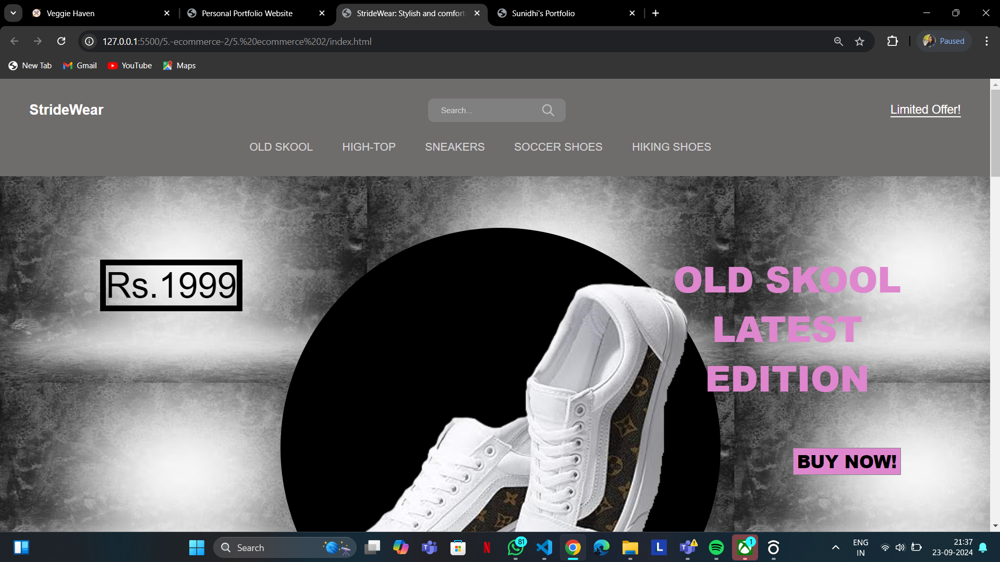
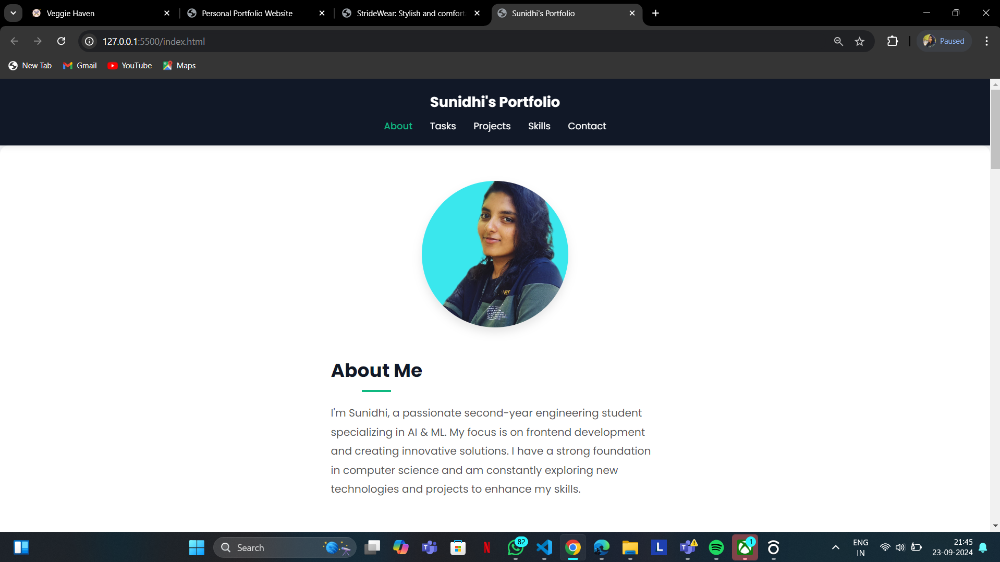

I'm Sunidhi, a passionate second-year engineering student specializing in AI & ML. My focus is on frontend development and creating innovative solutions. I have a strong foundation in computer science and am constantly exploring new technologies and projects to enhance my skills.
Built a website dedicated to vegetarian dishes, showcasing my frontend development skills and creative design capabilities.
Created a personal profile page showcasing skills, projects, and social media links using HTML, CSS, and JavaScript.
Developed a landing page for an e-commerce site advertising shoes. Included interactive elements and visual storytelling.
Designed and developed a personal portfolio website to showcase my previous web development tasks and individual projects.
Developed and trained a personal waterbot to analyze and provide insights on water quality data, ensuring safe and potable water. Automated responses for various water-related queries to assist in real-time monitoring and awareness.
Created an AI-driven platform for species identification and habitat mapping, aiming to support conservation efforts.
Contributed to a project aimed at enhancing employability by designing a user-friendly web platform. My role included creating flow diagrams, visualizing scenarios with stickman representations, and designing web page except the coding part.
Apart from technical skills, I have my personal interest in drawing, especially Mandala art and painting random scenes for relaxing myself.
In addition, I have a deep passion for singing and dancing, which allows me to channel my creativity and unwind. Whether I'm harmonizing to my favorite songs or letting loose on the dance floor, these activities fill me with joy and a sense of liberation.
If you'd like to get in touch and wish to see the code of developed projects, please fill out the form below, or reach out through any of my social media channels.
Location: Karnataka, India
Available: Mon - Fri (9 AM - 6 PM IST)